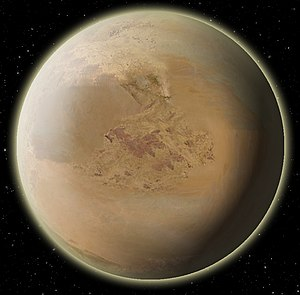

Tatooine
Tatooine est une planète-désert de l’univers de fiction Star Wars. Située dans la Bordure extérieure, cette planète orbite autour des étoiles binaires Tatoo I et II. Il s'agit du monde d'origine de la famille Skywalker.

| Apparaît dans : | La Menace fantôme, L'Attaque des clones, La Revanche des Sith |
|---|---|
| Environnement : | Canyons, Déserts, Mesas |